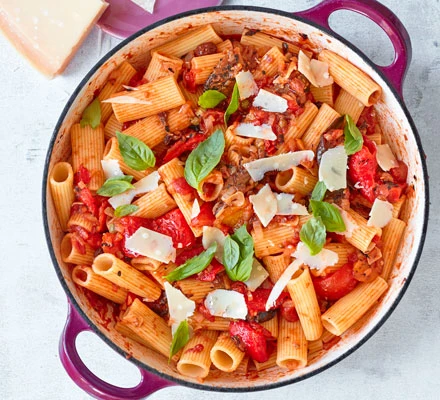

Caponata Pasta

An easy vegetarian caponata pasta ready to go in just 20 minutes.
It's simple to make and packs three of your five-a-day into one delicious meal!
Ingredients List
- 4 tbsp olive oil
- 1 large onion, finely chopped
- 4 garlic cloves, finely sliced
- 250g chargrilled Mediterranean veg
- 400g can chopped tomatoes
- 1 tbsp small capers
- 2 tbsp raisins
- 350g rigatoni, penne or another short pasta shape
- bunch basil leaves, picked
- parmesan (or vegetarian alternative), shaved, to serve